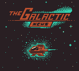
The Galactic News
- Made for
- GBJAM 11, September 2023
- Hardware
- Game Boy rules, 160 × 144, four colours
- Engine
- Godot 4.1
- My part
- Game design, pixel art and UI art
- Inspired by
- Paperboy
- Team
- IndigoMountain, Mika, GoldfishParty, Craig Henderson and me
Space is out of space
The game starts from Paperboy: ride along a street, throw the paper into every mailbox. We took the route to space.
The story is told in four screens before the title. Space is out of space. The intergalactic highways are cluttered with spacecraft. The Pirate News Network intercepts and manipulates news on the galactic web. So people go back to the only medium they still count on: the newspaper.
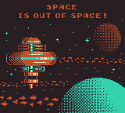
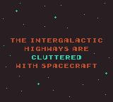
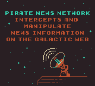
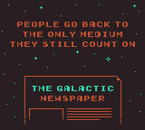
You fly the mail ship for The Galactic News, and every level is a delivery route.
I wrote the story with IndigoMountain, and that idea was there from the start.
Every menu is part of the world
I wanted every screen to be an object from the game's world, not a menu laid on top of it. The part I love most is how the story and the levels blend: the newspapers tell the story through their illustrations, and they are also the level select, without a seam between the two.
The level select is the newspaper. Each route is a front page of Galactic Today: a headline, a portrait, the quota for that route. And the headline is the level design. "Employment increases" is the first, gentle route. "Galaxy-wide fuel shortage" starts you with less fuel. "Pirates!" sends seven pirate ships. "Traffic collapses!" fills the lanes with more than two hundred civilian ships. "Pirate captain near Earth" is the boss. You read the news, then you fly into it.
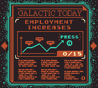
The shop is an ad in the paper. Upgrades are sold the way they would be in a newspaper: a page with the owner, the ship on the lift and the parts on offer.
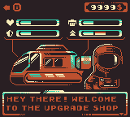
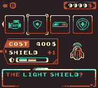
The HUD is the cockpit. Health, fuel, the delivery bar, shields and the paper count are dials and gauges on the ship's dashboard. It is harder to read than a plain HUD, and that was the trade I chose: you're sitting in the ship, not looking at a game. Getting it readable took several passes. An early test put a plain bar across the top of the screen; the final one moved everything into the dashboard at the bottom.
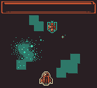
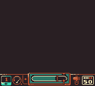
The small things are the ones I enjoy most. The money counter, for one, sits inside a frame shaped like a dollar sign.
A tutorial in the stars
The first route has no tutorial text for the controls. As you fly up, the stars form Game Boys, and each one lights the button you need: the D-pad to steer, A to throw a paper to the right, B to throw to the left.
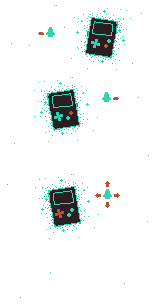
The cockpit explains itself the same way. On the first route the game pauses for a moment on each gauge, with an arrow and one short line: your fuel meter, steering uses fuel. Newspaper ammo, for shooting news.
How to play
- Steer the mail ship with the D-pad. Steering burns fuel.
- A throws a newspaper to the right, B throws one to the left.
- SELECT raises the shield when it's full.
- Pirates shoot back, and civilian ships get in the way.
- Fill the delivery bar to the line before the clock runs out.
A route ends on a results card: mailboxes delivered, the number you needed, and the money you made.
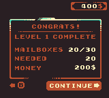
Failing a route still pays for every paper you delivered. That was deliberate: if the game feels hard, the money lets you unlock every upgrade you need, so the curve is kinder than it looks.
Four colours
GBJAM asks for Game Boy rules: a 160 × 144 screen and four colours. We picked a warm four: near-black, rust, mint and paper. They carry the whole game, from the title to the credits.
The shop started as a sketch, next to a diagram of every screen and how you move between them.
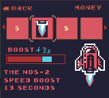
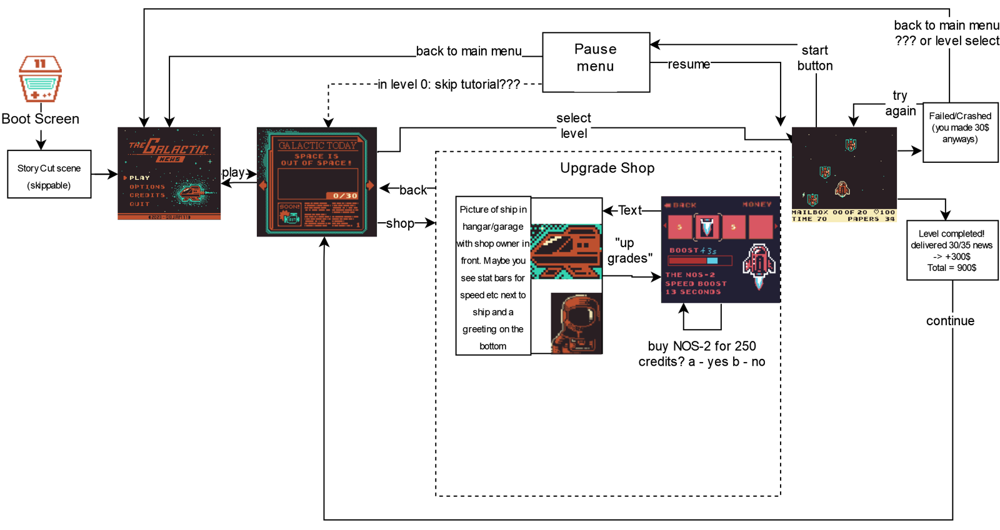
Staff
- Development: IndigoMountain, Mika
- Game design: PrimordialRune (me)
- Story: IndigoMountain, PrimordialRune (me)
- Pixel art: PrimordialRune (me), GoldfishParty
- UI art: PrimordialRune (me)
- Music: Craig Henderson
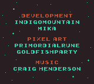